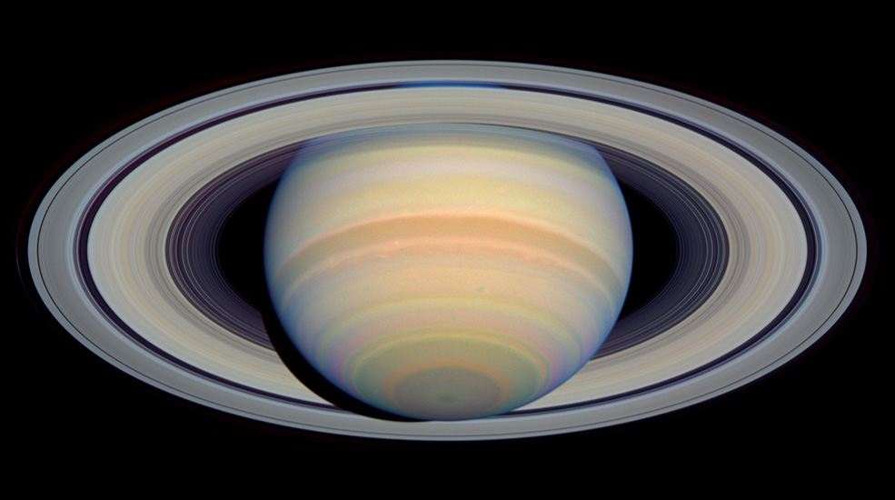

ÓRBITASATURNO
El señor de los anillos. Un gigante gaseoso tan ligero que flotaría en el agua, rodeado de anillos de hielo y roca.
Diametro
116.460 kmGravedad
10,4 m/s²Duracion del dia
10,7 horasTemperatura media
-140 °C
ÓRBITAEl señor de los anillos. Un gigante gaseoso tan ligero que flotaría en el agua, rodeado de anillos de hielo y roca.
Diametro
116.460 kmGravedad
10,4 m/s²Duracion del dia
10,7 horasTemperatura media
-140 °C